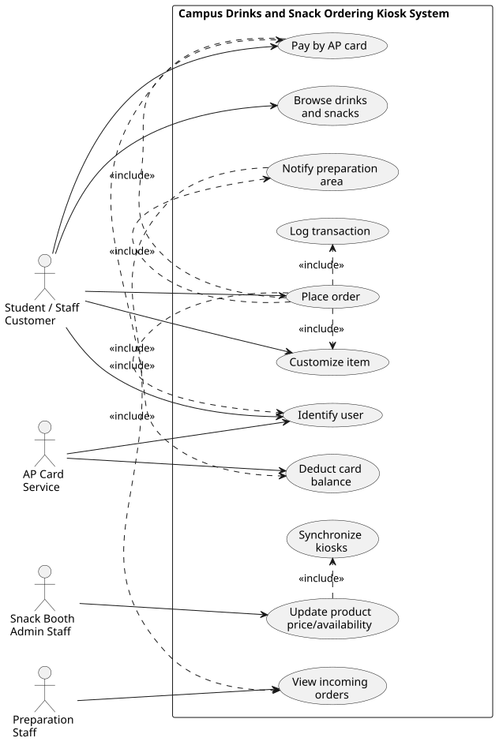
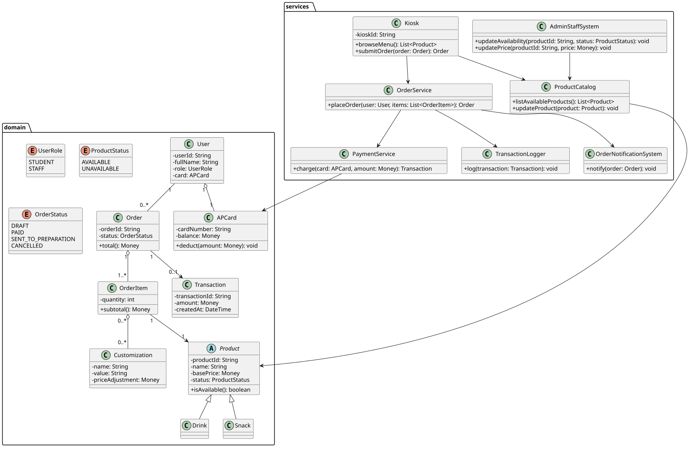
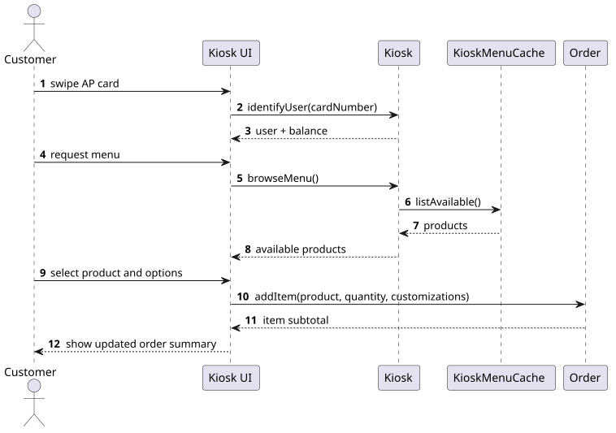
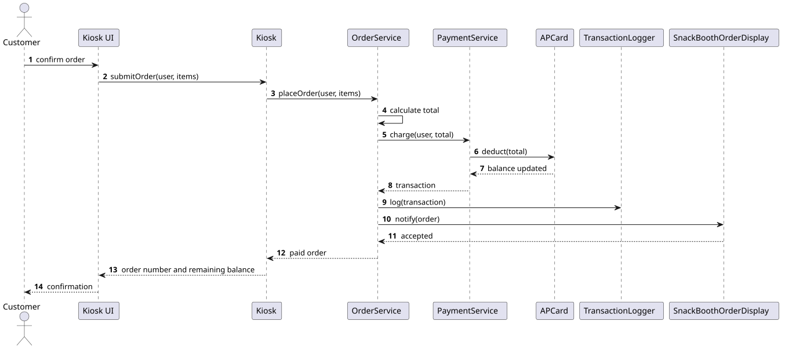
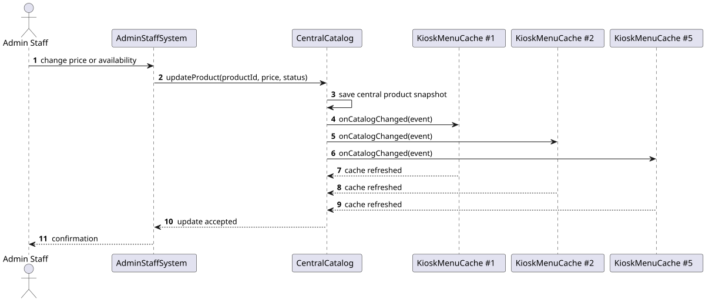
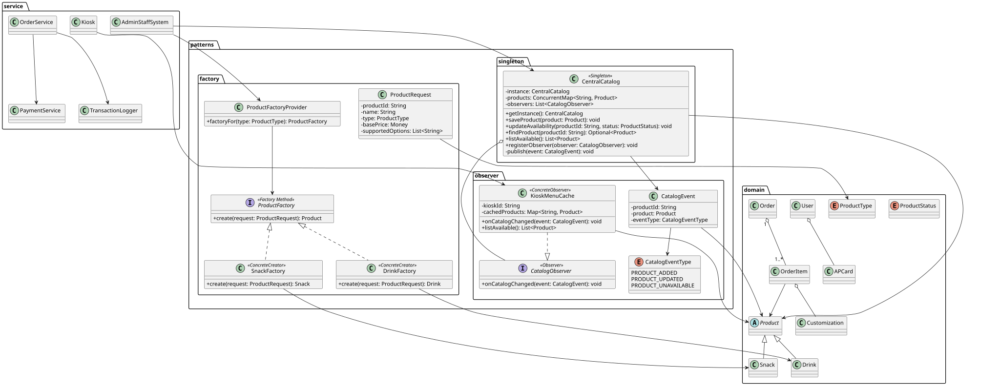
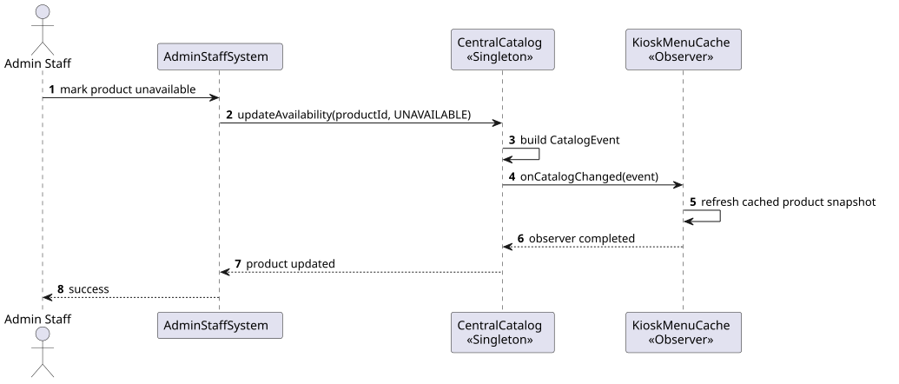
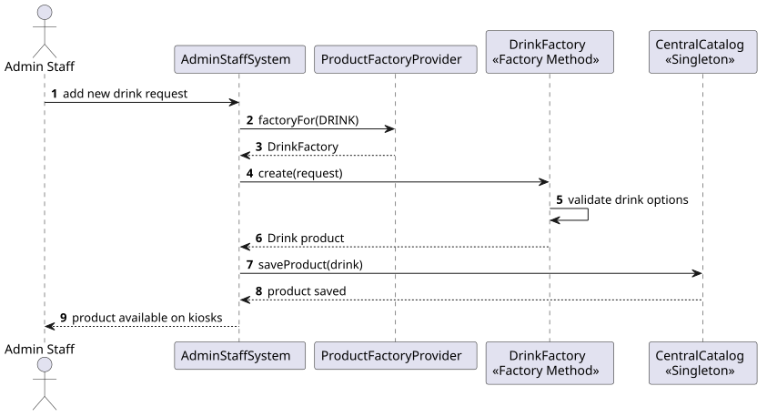
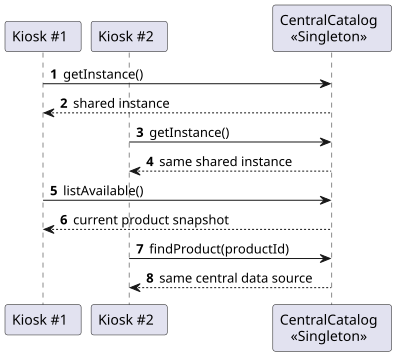

Project Title: APU Campus Wide Drinks and Snack Ordering Kiosk System
| Name and ID | [Your Name] - [Your Student ID] |
|---|---|
| Intake Code | [Your Intake Code] |
| Subject | Object Modelling with UML |
| Submission | UML Report and Java Skeletal Implementation |
Prepared for the OMU mini project assignment. Personal information should be completed before final submission.
diagrams/plantuml, with SVG images stored in diagrams/rendered.
Asia Pacific University requires a campus-wide drinks and snack ordering kiosk system for students and staff. The system should reduce queues around the snack booth by allowing users to browse products, customize drinks or snacks, place an order, pay by AP card, and send the confirmed order to the preparation area.
The initial deployment includes five kiosks, with a possible expansion to ten kiosks. Because multiple kiosks access the same menu and order system, the design must support centralized product updates, clear separation of responsibilities, and enough concurrency awareness to avoid inconsistent product price or availability data.
The primary end users are students and staff who order from kiosks. Snack booth admin staff manage product prices and availability. Preparation staff receive order notifications, while the AP card service identifies users and deducts balances.
The use case diagram identifies the customer, snack booth admin staff, preparation staff, and AP card service. It shows the main kiosk actions and supporting operations required by the assignment brief.

| Use Case | Description | Main Actor |
|---|---|---|
| Identify user | The kiosk reads the AP card and obtains user identity and balance. | Student / Staff Customer |
| Browse drinks and snacks | The user views currently available menu products synchronized from the central catalog. | Student / Staff Customer |
| Customize item | The user selects supported options such as size, sugar, ice, toppings, or ingredients. | Student / Staff Customer |
| Place order | The system creates the order, processes payment, logs the transaction, and notifies preparation staff. | Student / Staff Customer |
| Update product price/availability | Admin staff centrally change product data and trigger kiosk synchronization. | Snack Booth Admin Staff |
The initial class diagram models the system before introducing design patterns. Domain classes represent users, AP cards, products, orders, order items, customizations, and transactions. Service classes coordinate kiosk, payment, catalog, logging, and notification responsibilities.

Three sequence diagrams describe core runtime behavior. The first covers browsing and customizing an item, the second covers order placement and payment, and the third covers central product updates from the admin system.



The refined solution introduces three design patterns that directly support the assignment goals of maintainability, extensibility, and central synchronization.
| Pattern | Role in the Solution | Reason for Selection |
|---|---|---|
| Singleton | CentralCatalog acts as the single source of truth for product data. |
Prevents each kiosk from maintaining conflicting product price or availability data. |
| Observer | KioskMenuCache observes catalog changes through CatalogObserver. |
Allows all kiosks to react to central updates without hard-coding kiosk references. |
| Factory Method | DrinkFactory and SnackFactory create product subtypes. |
Makes it easier to add new product families or product creation rules later. |
The refined class diagram shows how the design patterns are integrated into the object model. The pattern packages separate product creation, catalog observation, and central catalog access from the main business domain.

The pattern sequence diagrams illustrate how the catalog update, factory creation, and singleton access flows operate at runtime.



The Java implementation is skeletal and focuses on demonstrating the selected design patterns. It has no external runtime dependency and is organized into domain, service, and pattern packages.
src/main/java/omu |-- domain | |-- APCard.java | |-- Product.java | |-- Drink.java | |-- Snack.java | |-- Order.java | |-- OrderItem.java | |-- Customization.java | |-- Transaction.java |-- patterns | |-- factory | |-- observer | |-- singleton |-- service | |-- AdminStaffSystem.java | |-- Kiosk.java | |-- OrderService.java | |-- PaymentService.java | |-- TransactionLogger.java | |-- SnackBoothOrderDisplay.java |-- Main.java
| Code Area | Evidence |
|---|---|
patterns/singleton/CentralCatalog.java |
Provides a shared catalog instance and thread-aware product update methods. |
patterns/observer |
Defines catalog events and observers so kiosk menu caches can update automatically. |
patterns/factory |
Separates drink and snack creation through factory classes and product requests. |
service/OrderService.java |
Coordinates order creation, AP card payment, transaction logging, and preparation notification. |
A simple scenario check is provided in src/test/java/omu/PatternScenarioTest.java.
The local environment used during development did not include a JDK, so full compilation
could not be executed there. Java syntax was checked using a parser, and the PlantUML
diagrams were rendered successfully into SVG images.
| Assignment Requirement | Status | Evidence in This Submission |
|---|---|---|
| High-level use case diagram with supporting descriptions | Satisfied | Figure 1 and section 2.2 provide the use case model and descriptions. |
| Class diagram representing the system design | Satisfied | Figure 2 provides the initial class diagram. |
| Three sequence diagrams for use cases | Satisfied | Figures 3, 4, and 5 cover browsing/customization, order payment, and admin update. |
| Updated class diagram with two to three design patterns | Satisfied | Figure 6 contains Singleton, Observer, and Factory Method. |
| Sequence diagrams showing pattern interaction | Satisfied | Figures 7, 8, and 9 show pattern interactions. |
| Implement patterns in Java or C++ | Satisfied | Java skeleton exists under src/main/java/omu. |
| Evaluation of the solution and pattern choices | Satisfied | Sections 3 and 7 discuss the suitability and limitations of the design. |
| Report structure and presentation | Mostly satisfied | The report is formatted for A4 printing. Personal cover details still need completion. |
The proposed design satisfies the major functional requirements of the APU drinks and snack ordering kiosk scenario. It identifies the main actors and use cases, models the system through class and sequence diagrams, and applies suitable object-oriented design patterns to improve maintainability and extensibility.
The Singleton central catalog supports one authoritative product source, the Observer pattern supports kiosk synchronization, and Factory Method supports extensible product creation. Together, these patterns directly address the assignment's central concerns: multiple kiosks, central updates, and future menu expansion.
Future enhancements would include persistent database storage, a real AP card integration, a kiosk user interface, stronger error recovery for failed order notifications, automated unit tests, and distributed consistency controls for a real multi-kiosk deployment.